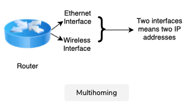

IP
Internet Protocol
To be able to use the underlying data link technologies
Assumptions
- To provide unreliable connectionless services
- IP hosts must have fixed size 32-bit addresses
- IP must be compatible with a variety of data link layers
- IP hosts should be able to exchange variable-length packets
IP addresses
32-bit numbers written as 4 bytes. Eg. 1.2.3.4 corresponds to 00000001000000100000001100000100.
Multihoming
A router has as many IPv4 addresses as the number of interfaces it has in the data link later. These hosts are said to be multihomed.

Address classes
| Class | Length of subnet ID | Range | Default subnet mask | Remarks |
|---|---|---|---|---|
| Class A | 1 octet | 0.0.0.0 to 127.255.255.255 | 255.0.0.0 | |
| Class B | 2 octets | 128.0.0.0 to 191.255.255.255 | 255.255.0.0 | |
| Class C | 3 Octets | 192.0.0.0 to 223.255.255.255 | 255.255.255.0 | |
| Class D | For multicast | |||
| Class E | Reserved |
Subnetting
- Subnetting based on octets (deprecated).
- Variable-length subnetting.
| Subnet | No. of possible addresses | Lowest address | Highest address |
|---|---|---|---|
| 10.0.0.0/30 | 2^2 | 10.0.0.0 | 10.0.0.3 |
| 192.0.2.0/24 | 2^8 | 192.0.2.0 | 192.0.2.255 |
Address assignment using subnetting
- Subnet mask: host bits set to 0 eg. 203.128.22.0 and a host can be 203.128.22.7
- Network address: host bits set to 0 eg. 203.128.22.0.
- Broadcast address: host bits set to 255 (all binary 1’s) eg. 203.128.22.255
- Host address: host bits eg. 203.128.22.18
Special addresses
Self-identification
0.0.0.0/8
Loopback address
127.0.0.1/8
Each IPv4 host has a loopback interface that is not attached to a data link layer. This allows processes running on a host to use TCP/IP to contact other processes running on the same host. This is very useful for testing purposes.
Private addresses
10.0.0.0/8, 172.16.0.0/12, 192.168.0.0/16
Private networks that are not directly attached to the Internet.
Link-local address
169.254.0.0/16
Routing
Routing is done via a routing table and longest prefix match.
Interfaces
Hosts (computers) don’t have IP addresses. Interfaces on hosts have IP addresses.
Interfaces
- Ethernet interface
- Wifi interface
- Loopback interface
- Tunnel interface
- Virtual machine interface
IPv4 packet header
- Version
- Length
- Source address
- Destination address
- Protocol
- Protocol “1” is ICMP.
- Checksum
- Flags
- TTL
- IP data (payload)
Fragmentation and reassembly
IPv4 packets need to be fragmented depending on the data link layer’s maximum transmission capability. They can be as big as 64KB.

NAT (Network Address Translation)

Router is a device that connects two different IP networks.